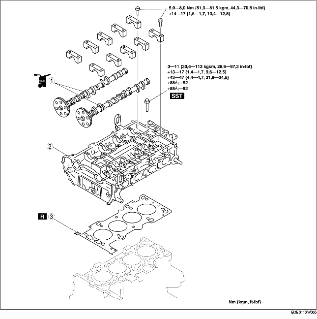

VERVANGEN KOPPAKKING [LF]
B3E011010271W02
-
Waarschuwing
-
• Brandstofdamp is gevaarlijk. Het ontbrandt gemakkelijk, waardoor ernstig letsel kan ontstaan. Houd vonken en open vuur altijd ver verwijderd van brandstof.
-
• Morsen en lekken van brandstof is gevaarlijk. De brandstof kan ontbranden waardoor ernstige verwondingen en schade kunnen ontstaan. Brandstof kan tevens huid en ogen irriteren. Om dit te voorkomen, moet altijd de "Veiligheidsprocedure brandstoflijn" worden uitgevoerd. (Zie Veiligheidsprocedures voor brandstofleidingen.)
1. Verwijder de distributieketting. (Zie VERWIJDEREN/PLAATSEN DISTRIBUTIEKETTING [LF].)
2. Verwijder de bobines. (Zie VERWIJDEREN/PLAATSEN BOBINES [LF].)
3. Verwijder het inlaatspruitstuk. (Zie VERWIJDEREN/PLAATSEN LUCHTINLAATSYSTEEM [LF].)
4. Neem de volgende onderdelen los:
-
(1) Opwarmkatalysator (Zie VERWIJDEREN/PLAATSEN UITLAATSYSTEEM [LF].)
-
(2) Bovenste radiateurslang
-
(3) Koelvloeistofslang
-
(4) Verwarmingsslang
-
(5) Bedrading.
5. Plaats eerst de motorkrik en het hulpstuk onder de carterpan om de motor goed te kunnen ondersteunen.
6. Verwijder de onderdelen in de aangegeven volgorde, zie de tabel.
7. Plaats de onderdelen in omgekeerde volgorde.
8. Controleer de compressie. (Zie CONTROLE COMPRESSIE [LF].)

.
|
1
|
Nokkenas
|
|
2
|
Cilinderkop
|
|
3
|
Koppakking
|
Aanwijzing voor verwijderen - nokkenas
-
Aanwijzing
-
• De cilinderkop en de nokkenaslagerkappen zijn genummerd om ervoor te zorgen dat de kappen op de oorspronkelijke plaats gemonteerd worden. Houd de verwijderde kappen bij de cilinderkop. Haal de kappen niet door elkaar.
1. Draai de bouten van de nokkenaslagerkappen in de aangegeven volgorde en in 2-3 stappen los.
Aanwijzing voor verwijderen - cilinderkop
1. Draai de bouten van de cilinderkop in de aangegeven volgorde en in 2-3 stappen los.
Aanwijzing voor plaatsen - cilinderkop
1. Meet de lengte van iedere cilinderkopbout.
-
• Vervang bouten die de maximale lengte overschrijden.
-
Lengte L
-
145,2-145,8 mm {5,72-5,74 in}
-
Maximum
-
146,5 mm {5,77 in}
2. Draai met SST (49 D032 316) de borgbout van de krukaspoelie in de aangegeven volgorde vast in de volgende 5 stappen.
-
Aanhaalmoment
-
(1) 3-11 Nm
-
{0,4-1,1 kgm, 27,6-97,3 in·lbf}
-
(2) 13-17 Nm
-
{1,4-1,7 kgm, 9,59-12,5 ft·lbf}
-
(3) 43-47 Nm
-
{4,4-4,7 kgm, 31,8-34,6 ft·lbf}
-
(4) 88°-92°
-
(5) 88°-92°
Aanwijzing voor plaatsen - nokkenas
1. Draai de nokken van cilinder nr. 1 in de stand voor het bovenste dode punt (BDP) en plaats de nokkenas.
2. Draai de nokkenaslagerkappen in 2-3 stappen tijdelijk vast.
3. Draai de bouten van de nokkenaslagerkappen in de aangegeven volgorde vast in de volgende twee stappen.
-
Aanhaalmoment
-
(1) 5,0-8,0 Nm
-
{51,0-81,5 kgcm, 44,3-70,8 in·lbf}
-
(2) 14,0-17,0 Nm
-
{1,5-1,7 kgm, 10,4-12,5 ft·lbf}